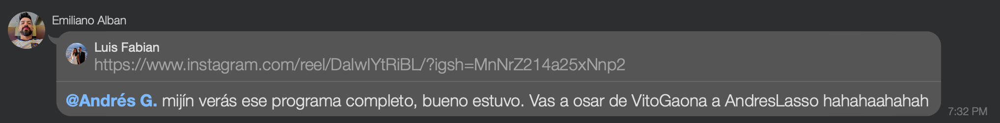
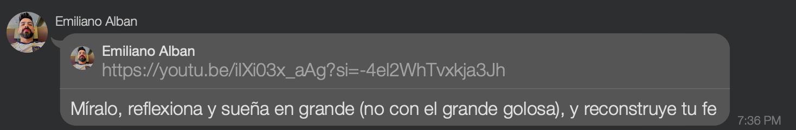
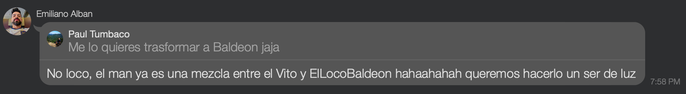
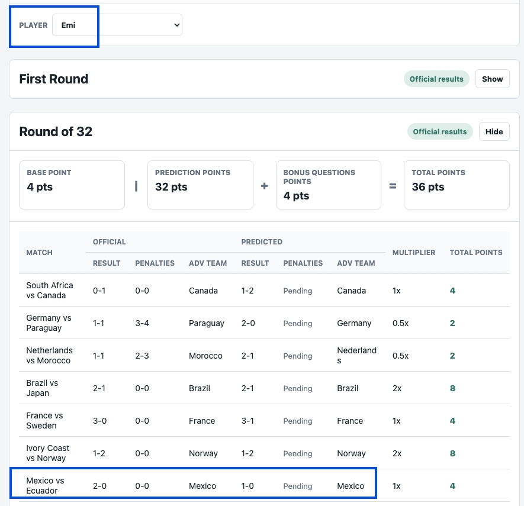

Manual comments go here. Accuracy is optional. Confidence is mandatory.
Faith Dealer, México Bettor
Faith-Based Betting Compliance
Emi spent the group chat running a full Ecuadorian spiritual retreat for Elwebo: "reconstruye tu fe,"
"sueña en grande," "vas a osar de VitoGaona," pure La Tri motivational LinkedIn with extra encebollado.
And then the score visualizer opens the curtains and, ñaño, the man had México beating Ecuador.
This was not faith. This was undercover immigration. Publicly: "Ecuador, ser de luz, confía." Privately:
"México 1-0, gracias por los cuatro puntos." Pana, Emi didn't rebuild anyone's faith; he sold them a
timeshare in esperanza while quietly buying property in Cancún.
Evidence A, B, and C: sermons. Evidence D: the bet slip wearing a fake mustache. #ProhibidoOlvidar

Evidence A: public faith ministry

Evidence B: rebuild your faith department

Evidence C: ser de luz propaganda

Evidence D: México 1-0 Ecuador
Round of 32
Second Place Missing Persons Unit
Emi is no longer in second place. Daniel passed him by one point, which is the spreadsheet equivalent of
losing your parking spot while still standing next to the car. Ñaño, after Poolgate, the complaints, the
forensic accounting, and the "trust me bro" confidence, the leaderboard said: actually, third looks better
on you. #ProhibidoOlvidar
La Tri Customs and Deportations
To everyone who picked Ecuador to reach the Round of 16: beautiful faith, terrible invoice. Ecuador made
it to the Round of 32 and then the bracket politely asked them to collect their things. Pana, this was not
analysis; this was putting a poncho on a spreadsheet and calling it destiny.
Emotional Volume Analytics
Elwebo Lavenganza and Paul both had Ecuador winning Group E, which is adorable in the same way a printer
error is adorable after midnight. Germany first, Ivory Coast second, Ecuador third, and somehow the
prediction sheet was out here yelling "La Tri arriba" like standings are negotiable. Chuta, mi llave, FIFA
does not award points for emotional volume.
Poolgate
Spreadsheet Internal Affairs
Emi saw the pool get unlocked for Paul and immediately treated it like the vault door in a bad heist
movie. Ñaño, the man was already sitting on 100 points, second place, five best-third hits, and still
thought, "you know what this needs? Evidence." This was not strategy. This was petty spreadsheet burglary
with the subtlety of a car alarm in a library. Paul needed a late entry; Emi heard "open season on shame."
And the best part is he got caught, which means he cheated with the same accuracy he uses for Group K.
Deadline Crime Scene Unit
Paul didn't fill out the pool on time, which is already elite administrative terrorism. Because of him, the
pool had to be unlocked, the sacred spreadsheet doors opened, and suddenly Emi discovered temptation like a
telenovela villain with edit access. Mi pana, your late homework became a crime scene. You didn't just miss
the deadline; you created the security vulnerability. 79 points, three best-third hits, and now an accidental
legacy as the guy whose procrastination launched Poolgate. That's not participation. That's infrastructure
failure with a name tag.
Imaginary Clause Enforcement
NoDorex reading rules that do not exist is honestly consistent with the picks: 47 points, last place, and
still interpreting the constitution of a fantasy pool like a haunted lawyer. Ñaño, the rules are not hidden
between the lines; your points are. Two best-third hits and a name that says "100% sure" while the standings
say "source needed." At this point, NoDorex is not checking the rules. He is manifesting DLC for arithmetic.
Group MD3
Score Autopsy Desk
NoDorex finished Group MD3 with 47 points, which is less a score and more a public safety demonstration.
Two best-third hits, Ecuador as favorite, Portugal as champion, and enough upside-down group orders to make
Google Sheets ask for parental controls. Ñaño, if confidence gave points, you'd be champion already. Sadly,
this pool uses football results, not sunglasses and emotional volume.
One-Hit Bureau
Irina has 58 points and one best-third hit, which means Ecuador is basically carrying the entry in a
plastic bag from Tía. The picks kept finding good teams and then placing them like a seating chart made
during an earthquake. Spain champion, Spain favorite, Spain everywhere, and still the score is looking
around like, "do we know anyone else here?" Chuta, this wasn't a bracket. This was a Spanish embassy
application with football attached.
Nationalism Compliance
Juan is on 70 points, and the bracket has that special energy of someone who saw the standings, nodded
respectfully, and then chose nationalism with extra steps. South Korea, Iran, Uzbekistan, Haiti, Ivory Coast
in best-thirds; Ecuador pushed like a shareholder investment; and somehow the score still has to pretend
this was research. Pana, this is not a prediction sheet. This is a group-stage novela where every plot twist
makes the accountant leave.
Complaint Department
Paul complaining about the scoring system before knockouts is bold, because 79 points and three best-third
hits is not oppression, mi pana. That's just the math quietly showing your homework to the class. South
Korea over Mexico, Qatar sneaking into Group B, Ecuador over Germany, Uruguay treated like Cape Verde didn't
exist. The scoring system didn't betray you. It simply read your picks out loud, which, admittedly, was
cruel.
Arithmetic Ombudsman
Emi complaining while sitting at 100 points is elite theater. Second place, five best-third hits,
full-order jackpots in multiple groups, and still acting like the rules personally keyed his car. Ñaño, the
scoring system is not broken just because it didn't hand you a parade and a small municipality. You're not
being robbed; you're being mildly inconvenienced by arithmetic, which is apparently your greatest rival so
far.
Group MD2
Confidence Auditor
NoDorex is still "100% sure," which is impressive because the spreadsheet is now 100% filing a noise
complaint. Zero best-third hits, Ecuador as favorite team, Ecuador to the semifinal, and 39 points. Ñaño,
this is not confidence anymore. This is a PowerPoint presentation titled What If The Standings Simply
Apologized To Me?
Patriotic Wi-Fi Inspector
Juan picked Ecuador to win Group E and reach a quarterfinal, and Group E responded by putting them third
like it was politely moving a chair out of the way. One best-third hit is doing the emotional labor of an
entire entry. Pana, this bracket has Ecuadorian optimism, Portuguese ambition, and the structural integrity
of wet cardboard.
La Tri Buffering Desk
Ecuador's current Group E performance is giving "we brought snacks to a football match" energy. Third
behind Germany and Ivory Coast, still technically alive, but mostly in the way a phone at 2% is technically
alive. Chuta, La Tri isn't eliminated; it's just buffering in public.
Poolside HR
"Girls are guuuurling in the pool" is a strong slogan from Amal, mostly because Amal can say it from the
deep end while Irina is still checking whether her floaties count as best-third points. Ñañas, the branding
is elite, but right now this is less girl power and more Amal power with Irina listed as an unpaid intern.
Anonymous Oracle
Breaking news from the Department of Confidence: NoDorex is still 100% sure, and the leaderboard is 100%
unconvinced. Ecuador to the semifinal, favorite team Ecuador, one best-third hit, last place. Ñaño, this is
not a prediction sheet anymore. This is a motivational poster that forgot to check the standings.
Spreadsheet Witness
Juan’s entry has range: perfect Group B, then immediately Ecuador winning Group E and reaching a
quarterfinal like the spreadsheet got hacked by patriotic Wi-Fi. One best-third hit is standing there alone,
holding a tiny umbrella in a hurricane. Pana, the math found one good room in the house and condemned the
rest of the property.
Mystery Analyst
Paul is surviving, but the Ecuador-first pick is still doing that thing where confidence enters the room
before evidence. The score is respectable enough to avoid emergency sirens, but Germany in third was a
choice with full chest. Mi pana, this is not chaos anymore. It is organized chaos with a spreadsheet
password.
Bracket Informant
Daniel gave Ecuador the runner-up slot and a quarterfinal future, which is exactly the kind of optimism
that makes spreadsheets ask for therapy. Germany first, Ecuador second is reasonable enough, and then the
quarterfinal pick walks in wearing sunglasses indoors. Chuta, pana, Ecuador may be good, but this sheet is
treating them like they found a cheat code in Guayaquil.
Group MD1
Pool Desk
Elwebo Lavenganza, the revenge tour is currently stuck in customs. One best-third hit is doing all the
cardio
here while the rest of the picks are sitting in a plastic chair outside the tienda. Türkiye over the U.S.,
Ecuador over Germany, Belgium over Iran. Chuta, mi llave, that's not forecasting, that's arguing with the
standings like they owe you money.
Anonymous Analyst
Paul's picks have big “tranqui, yo sí sé” energy, followed immediately by disaster. South Korea first,
Mexico
second, South Africa third. Chuta, pana, that's not analysis, that's playing FIFA with the controller
unplugged. One best-third hit is the only thing preventing this from being declared patrimonio nacional del
sufrimiento.
Official Nonsense
“100% sure” 😎 is aging like milk in Quito traffic. Japan first, Iran first, Croatia first, Paraguay first,
and one best-third hit. One. The confidence is wearing sunglasses indoors while the score quietly asks to be
left out of the group chat. Pana, this wasn't a prediction sheet, it was a TED Talk on overcommitment.
Bini Yunior
Juan, mi pana, 28 points is not a score, it's a cry for help with spreadsheet formatting. Zero best-third
hits.
Cero. You picked eight teams and the tournament said, “interesante, pero no.” Canada over Switzerland,
Ecuador
over Germany, Portugal over Colombia. This was not a bracket, this was Google Maps with no signal
Emi spent the group chat running a full Ecuadorian spiritual retreat for Elwebo: "reconstruye tu fe," "sueña en grande," "vas a osar de VitoGaona," pure La Tri motivational LinkedIn with extra encebollado. And then the score visualizer opens the curtains and, ñaño, the man had México beating Ecuador.
This was not faith. This was undercover immigration. Publicly: "Ecuador, ser de luz, confía." Privately: "México 1-0, gracias por los cuatro puntos." Pana, Emi didn't rebuild anyone's faith; he sold them a timeshare in esperanza while quietly buying property in Cancún.
Evidence A, B, and C: sermons. Evidence D: the bet slip wearing a fake mustache. #ProhibidoOlvidar




Emi is no longer in second place. Daniel passed him by one point, which is the spreadsheet equivalent of losing your parking spot while still standing next to the car. Ñaño, after Poolgate, the complaints, the forensic accounting, and the "trust me bro" confidence, the leaderboard said: actually, third looks better on you. #ProhibidoOlvidar
To everyone who picked Ecuador to reach the Round of 16: beautiful faith, terrible invoice. Ecuador made it to the Round of 32 and then the bracket politely asked them to collect their things. Pana, this was not analysis; this was putting a poncho on a spreadsheet and calling it destiny.
Elwebo Lavenganza and Paul both had Ecuador winning Group E, which is adorable in the same way a printer error is adorable after midnight. Germany first, Ivory Coast second, Ecuador third, and somehow the prediction sheet was out here yelling "La Tri arriba" like standings are negotiable. Chuta, mi llave, FIFA does not award points for emotional volume.
Emi saw the pool get unlocked for Paul and immediately treated it like the vault door in a bad heist movie. Ñaño, the man was already sitting on 100 points, second place, five best-third hits, and still thought, "you know what this needs? Evidence." This was not strategy. This was petty spreadsheet burglary with the subtlety of a car alarm in a library. Paul needed a late entry; Emi heard "open season on shame." And the best part is he got caught, which means he cheated with the same accuracy he uses for Group K.
Paul didn't fill out the pool on time, which is already elite administrative terrorism. Because of him, the pool had to be unlocked, the sacred spreadsheet doors opened, and suddenly Emi discovered temptation like a telenovela villain with edit access. Mi pana, your late homework became a crime scene. You didn't just miss the deadline; you created the security vulnerability. 79 points, three best-third hits, and now an accidental legacy as the guy whose procrastination launched Poolgate. That's not participation. That's infrastructure failure with a name tag.
NoDorex reading rules that do not exist is honestly consistent with the picks: 47 points, last place, and still interpreting the constitution of a fantasy pool like a haunted lawyer. Ñaño, the rules are not hidden between the lines; your points are. Two best-third hits and a name that says "100% sure" while the standings say "source needed." At this point, NoDorex is not checking the rules. He is manifesting DLC for arithmetic.
NoDorex finished Group MD3 with 47 points, which is less a score and more a public safety demonstration. Two best-third hits, Ecuador as favorite, Portugal as champion, and enough upside-down group orders to make Google Sheets ask for parental controls. Ñaño, if confidence gave points, you'd be champion already. Sadly, this pool uses football results, not sunglasses and emotional volume.
Irina has 58 points and one best-third hit, which means Ecuador is basically carrying the entry in a plastic bag from Tía. The picks kept finding good teams and then placing them like a seating chart made during an earthquake. Spain champion, Spain favorite, Spain everywhere, and still the score is looking around like, "do we know anyone else here?" Chuta, this wasn't a bracket. This was a Spanish embassy application with football attached.
Juan is on 70 points, and the bracket has that special energy of someone who saw the standings, nodded respectfully, and then chose nationalism with extra steps. South Korea, Iran, Uzbekistan, Haiti, Ivory Coast in best-thirds; Ecuador pushed like a shareholder investment; and somehow the score still has to pretend this was research. Pana, this is not a prediction sheet. This is a group-stage novela where every plot twist makes the accountant leave.
Paul complaining about the scoring system before knockouts is bold, because 79 points and three best-third hits is not oppression, mi pana. That's just the math quietly showing your homework to the class. South Korea over Mexico, Qatar sneaking into Group B, Ecuador over Germany, Uruguay treated like Cape Verde didn't exist. The scoring system didn't betray you. It simply read your picks out loud, which, admittedly, was cruel.
Emi complaining while sitting at 100 points is elite theater. Second place, five best-third hits, full-order jackpots in multiple groups, and still acting like the rules personally keyed his car. Ñaño, the scoring system is not broken just because it didn't hand you a parade and a small municipality. You're not being robbed; you're being mildly inconvenienced by arithmetic, which is apparently your greatest rival so far.
NoDorex is still "100% sure," which is impressive because the spreadsheet is now 100% filing a noise complaint. Zero best-third hits, Ecuador as favorite team, Ecuador to the semifinal, and 39 points. Ñaño, this is not confidence anymore. This is a PowerPoint presentation titled What If The Standings Simply Apologized To Me?
Juan picked Ecuador to win Group E and reach a quarterfinal, and Group E responded by putting them third like it was politely moving a chair out of the way. One best-third hit is doing the emotional labor of an entire entry. Pana, this bracket has Ecuadorian optimism, Portuguese ambition, and the structural integrity of wet cardboard.
Ecuador's current Group E performance is giving "we brought snacks to a football match" energy. Third behind Germany and Ivory Coast, still technically alive, but mostly in the way a phone at 2% is technically alive. Chuta, La Tri isn't eliminated; it's just buffering in public.
"Girls are guuuurling in the pool" is a strong slogan from Amal, mostly because Amal can say it from the deep end while Irina is still checking whether her floaties count as best-third points. Ñañas, the branding is elite, but right now this is less girl power and more Amal power with Irina listed as an unpaid intern.
Breaking news from the Department of Confidence: NoDorex is still 100% sure, and the leaderboard is 100% unconvinced. Ecuador to the semifinal, favorite team Ecuador, one best-third hit, last place. Ñaño, this is not a prediction sheet anymore. This is a motivational poster that forgot to check the standings.
Juan’s entry has range: perfect Group B, then immediately Ecuador winning Group E and reaching a quarterfinal like the spreadsheet got hacked by patriotic Wi-Fi. One best-third hit is standing there alone, holding a tiny umbrella in a hurricane. Pana, the math found one good room in the house and condemned the rest of the property.
Paul is surviving, but the Ecuador-first pick is still doing that thing where confidence enters the room before evidence. The score is respectable enough to avoid emergency sirens, but Germany in third was a choice with full chest. Mi pana, this is not chaos anymore. It is organized chaos with a spreadsheet password.
Daniel gave Ecuador the runner-up slot and a quarterfinal future, which is exactly the kind of optimism that makes spreadsheets ask for therapy. Germany first, Ecuador second is reasonable enough, and then the quarterfinal pick walks in wearing sunglasses indoors. Chuta, pana, Ecuador may be good, but this sheet is treating them like they found a cheat code in Guayaquil.
Elwebo Lavenganza, the revenge tour is currently stuck in customs. One best-third hit is doing all the cardio here while the rest of the picks are sitting in a plastic chair outside the tienda. Türkiye over the U.S., Ecuador over Germany, Belgium over Iran. Chuta, mi llave, that's not forecasting, that's arguing with the standings like they owe you money.
Paul's picks have big “tranqui, yo sí sé” energy, followed immediately by disaster. South Korea first, Mexico second, South Africa third. Chuta, pana, that's not analysis, that's playing FIFA with the controller unplugged. One best-third hit is the only thing preventing this from being declared patrimonio nacional del sufrimiento.
“100% sure” 😎 is aging like milk in Quito traffic. Japan first, Iran first, Croatia first, Paraguay first, and one best-third hit. One. The confidence is wearing sunglasses indoors while the score quietly asks to be left out of the group chat. Pana, this wasn't a prediction sheet, it was a TED Talk on overcommitment.
Juan, mi pana, 28 points is not a score, it's a cry for help with spreadsheet formatting. Zero best-third hits. Cero. You picked eight teams and the tournament said, “interesante, pero no.” Canada over Switzerland, Ecuador over Germany, Portugal over Colombia. This was not a bracket, this was Google Maps with no signal